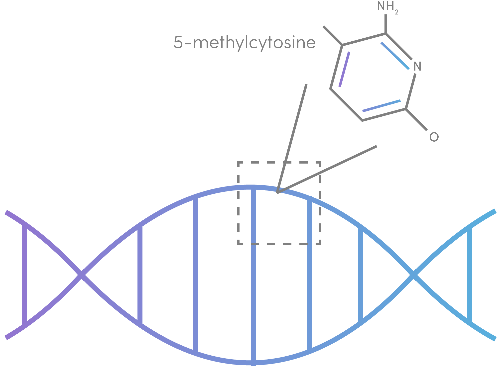

Challenges in Cancer Diagnostics Today
Invasiveness
Traditional tissue biopsies are often extremely invasive and can lead to further complications, including incorrect diagnoses or spreading the cancer.
Lack of Accuracy
The predictive value of many imaging algorithms and morphology-based technologies is often too low.

Chemical Treatment
Treatment of samples with chemicals such as sodium bisulfite impacts the results by lowering accuracy and inducing random breaks in DNA fragments.

Thinking About Cancer Differently
A New Approach
Instead of thinking about cancer as a disease based on alterations to the genetic code that are perpetuated through the central dogma, our team sought to identify a more consistent diagnostic metric. For that, we turned to promoter methylation as an epigenetic determinant of cancer.